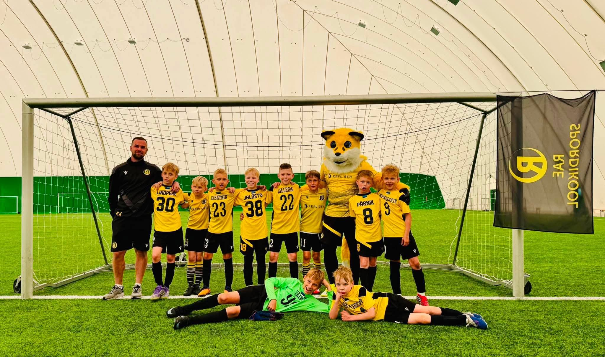
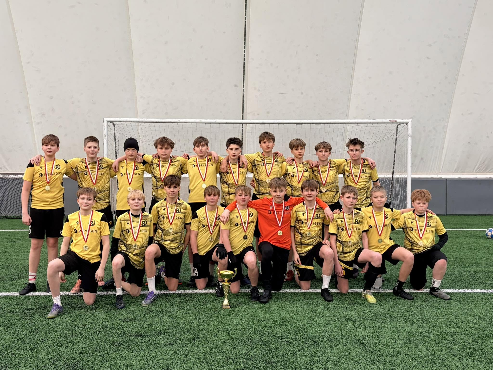

Rae Spordikooli jalgpallipere
FC Rae — Rae valla jalgpallikogukond
Ehitame koos klubi, kus lapsed arenevad, kodumängudest saavad sündmused ja Rae jalgpallil on tugev hääl.
Koduväljak: Jüri staadion, Laste 3
Viimased tulemused
Andmed: jalgpall.ee cache
Võistkonnad
Vaata kõiki võistkondiMängukalender
Rae mängud ühest kohast.
Kalender kasutab jalgpall.ee cache'i ning kuvab nii esinduse, duubli kui noortevõistkondade mängud. Avalik leht ei koorma jalgpall.ee-d iga külastusega.
Meie visioon
Üks klubi. Üks kogukond. Üks Rae.
FC Rae visioon on kujuneda Eesti üheks suurimaks ja mõjukamaks kogukondlikuks jalgpalliklubiks. Meie tugevus peab olema inimestes, kes tunnevad, et see on nende klubi.
Loe visiooni500–1000noorsportlast
1000+liiget ja toetajat
2030siht: Esiliiga
Väärtused
Mille järgi klubi kasvab.
Meeskonnad
Rae I ja Rae II annavad noortele nähtava sihi.

Rae II
Arengukeskkond, kus järgmised mängijad saavad täiskasvanute jalgpalli kogemuse.
Vaata võistkondaNoored
Too laps FC Rae jalgpallitreeningule
PoisidU7–U19
TüdrukudU7–U19
Algajad6+ aastat
Treeningud toimuvad Jüris, Järvekülas ja Peetris. Koos Rae Spordikooli ja Rae Huvialakooli spordiosakonna juhendajatega.
Millises vanuses saab alustada?
Algajatele sobib üldjuhul 6+ vanus. Täpne grupp sõltub lapse vanusest ja treeningkohast.
Mida trenni kaasa võtta?
Sportlik riietus, joogipudel ja väljakule sobivad jalanõud. Treener täpsustab grupi järgi.
Kogukond
FC Rae on rohkem kui jalgpall.
Kodumängud, vabatahtlikud, lapsevanemad, fänniklubi ja kohalikud ettevõtted teevad klubist Rae valla ühise spordipere.

Fänniklubi
Ole esimeste seas, kes saab teada kodumängudest ja klubi tegemistest.
Kodumängud
Tule Jüri staadionile ja loo koos meiega kodumängu tunne.
Vabatahtlikud
Iga panus loeb: mängupäevad, üritused ja kogukonna tegevused.
Toetajapaketid
Kasvata Rae jalgpalli nähtavust koos meiega.
Fänniklubi
Liitu FC Rae kogukonnaga
Saa esimesena teada kodumängudest, noortetöö uudistest, fännikaubast, üritustest ja klubi arengutest.